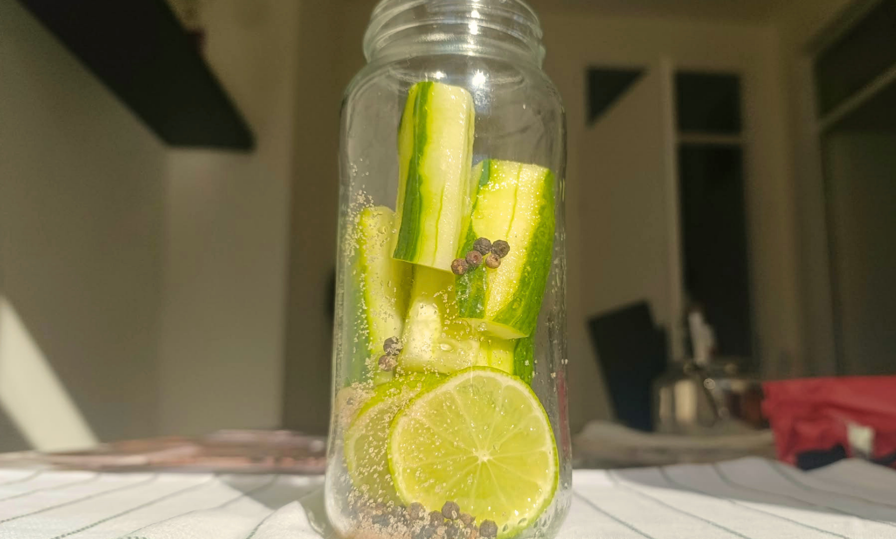
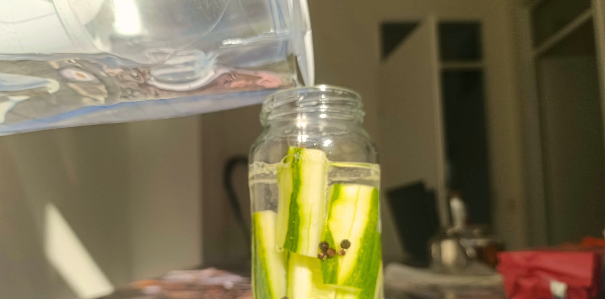

Food Fermentation
Fermentation is used for lots of things such as pickling or even for doughs but in this website i am going to show you the steps of fermentation with little ingredients so you can use the leftover efficiently.
Ingridients To Use
Here is ingredients you can use in your fermentation:
| Ingredients | Description & Tips |
|---|---|
| The vegetables you want to ferment | ( for example, cucumbers, onion(personal favourite), carrots, ect. ) |
| Salt | ( non-iodized salt and sea salt is my recommendation ) |
| Water | ( Warm temperature water is recommended. ) |
| A clean glass jar with a secure lid | (make sure everything is properly cleaned before you start or it could make you sick) |
| Lemon | ( to give it a sourness. If you don't have you can also use vinegar. ) |
| Mustard seed | (Not needed but it gives a good flavour. ) |
Once you have all the ingredients, you are basically ready to start making your fermented vegetables. Depending on which vegetable you choose, you can make different types of fermented food. I can already hear you saying, “NOW WHAT?!?”. Well, it's not rocket science, so let's get started!

Step 1
First, wash your vegetable and cut it into the size and shape you want. Next, slice your lemon. Put some lemon slices into the bottom of the jar, followed by some salt (and add mustard seeds or whole black peppercorns. if you don't have its okey) Then, add your vegetables. Try to arrange them neatly and leave some space at the top instead of filling the jar completely. Finally, add the remaining salt.

Step 2
Now we are coming to end Get your warm water. ( or water with vinegar (half water half vinegar.) if you didn't use lemon) make sure all the vegetables are completely underneath the liquid. If some pieces are sticking out, push them down. MAKE THEM DROWN!! Now close your jar.
Make sure the cap is properly closed so nothing can get inside. And now comes the important part WAITING. The longer you leave it, the more sour it will become. So if you don't like very sour vegetables, you don't have to wait as long. After closing the jar for the first time, don't put it in the fridge yet, because the cold temperature will slow down the fermentation process. Instead, keep it in a cool, room-temperature place away from direct sunlight.
Once you open the jar, PUT IT IN THE FRIDGE!! And well done!!! You just made yourself a nice jar of fermented vegetables.
